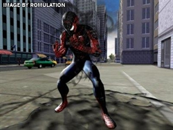
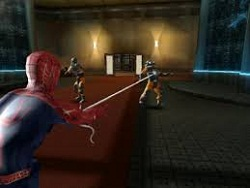

Spider Man 3

Pagina Inicial
Gênero: Ação, Aventura
Formato: ISO
Plataforma: Playstation 2
Download no final da Pagina
DESCRIÇÃO DO PRODUTO
Após a luta contra o lagarto Peter deve lutar contra o novo Duende Verde,
que é na verdade seu amigo Harry Osborn e o resultado da luta é semelhate
ao do filme.

Após deter o Escorpião Peter vai descansar no seu apartamento
então o simbionte se gruda ao seu corpo, quando Peter acorda está vestindo
uma roupa preta e se sentindo mais poderoso então percebe o Homem-areia
fugindo com maletas do banco para o metrô, o Homem-Aranha o segue e o
alcança então começa uma árdua luta e o resultado é igual ao do filme.
